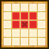

| Lv: | 140 |
|---|---|
| HP: | |
| MP: | |
| ATK: | |
| DEF: | |
| AGL: | |
| WIS: | |
| Move: | |
| Weight: | 65 |
| Weaknesses: |  |
 |
/ |  |
 |
|---|---|---|---|---|---|
| Resistances: |  |
 |
/ |  |
 |
| Immunities: |  |
| Family: |  |
Role: |  |
Element: |  |
|---|
Note: All perks/abilities denoted with an * are using unofficial translations
| Abilities | ||||||
|---|---|---|---|---|---|---|
| Level | Type | Name | MP | Element | Range | Description |
| 1 |  |
Very Evil Eye | 26 |  |
 1-3 |
Often paralyses 1 enemy |
| 33 |  |
Fallen Angel Blow | 60 | |
 Front |
Deals major physical damage (240% potency) to all ??? units in area of effect, deals major physical damage (360% potency) to all other units in area of effect, moves up to 2 spaces |
| 55 |  |
Catastrophe | 75 |  |
 1 |
Deals minor surehit Sizz-type physical damage (43% potency) to random enemies in area of effect 8 times, rarely lowers DEF for 3 turns |
 |
Fallen Blaze* フォールンブレイズ |
119 | |
 Fan |
Deals major Sizz-type martial damage proportional to ATK to all enemies in area of effect, moves up to 4 spaces, often lowers Sizz Res for 3 turns | |
| Base Perks | ||
|---|---|---|
| Level | Name | Description |
| 1 | ATK +15 | Raises max ATK by 15 |
| 1 | AGL +20 | Raises max AGL by 20 |
| 1 | Hate & Despair | Battle start: Reduces damage taken by 20% for 3 turns |
| 110, 120, 130, 140 | Catastrophe potency +2% | Raises Catastrophe potency by 2% |
| Awakening Perks | ||
|---|---|---|
| Awakening | Name | Description |
| 1 | Fallen Angel Wings | Battle start: Raises evasion rate by 100% for 3 turns |
| 2 | Frizz Res +25 | Raises Frizz resistance by 25 |
| 3 | Destruction Personified | When attacking: For number of attacked enemies only, raises ATK for 1 turn |
| 3, 5 | Catastrophe potency +5% | Raises Catastrophe potency by 5% |
| 3, 5 | Fallen Blaze* potency +5% | Raises Fallen Blaze* potency by 5% |
| 3, 5 | Physical Potency/Recovery +5% | Raises physical potency/recovery by 5% |
| 3, 5 | Martial Potency/Recovery +5% | Raises martial potency/recovery by 5% |
| 4 | Zam Res +25 | Raises Zam resistance by 25 |
| 5 | Physical Critical Hit Rate +5% | Raises physical critical hit rate by 5% |
| 1, 2, 3, 4, 5 | Stats Up | Raises HP, MP, ATK, DEF, WIS and AGL by 5% |
| Talent Blossom | |
|---|---|
| Name | Description |
| Fallen Blaze* フォールンブレイズ |
Deals major Sizz-type martial damage proportional to ATK to all enemies in area of effect, moves up to 4 spaces, often lowers Sizz Res for 3 turns |
| Penance For All Sins* すべての罪にさばきを |
Action start on odd turns until turn 10: Heals 10% of max HP, restores 8% of max MP, and raises physical and martial potency/recovery for 3 turns |
| Fallen Angel's Aura* 堕天使のオーラ |
Action start: Attacks with Fallen Angel's Aura* if enemy is within large rhombus area, up to 3 times per battle (Fallen Angel's Aura*: Deals major martial damage (220 base potency) to all enemies in area of effect, occasionally lowers DEF and Martial Res for 3 turns) |
| Vengeful Fallen Angel* 復讐の堕天使 |
Battle start: Enacts Auto-Revive (50% of max HP) for 99 turns When revived: Reduces damage taken by 20%, raises ATK, physical and martial potency/recovery, and massively raises evasion rate for 3 turns |
| HP +50 | Raises max HP by 50 |
| AGL +40 | Raises max AGL by 40 |
| (HP +25) x2 | Raises max HP by 25 |
| (MP +15) x2 | Raises max MP by 15 |
| ATK +15 | Raises max ATK by 15 |
| DEF +25 | Raises max DEF by 25 |
| AGL +15 | Raises max AGL by 15 |
| WIS +15 | Raises max WIS by 15 |
| (Sizz-type Physical Potency +1.5%) x2 | Raises Sizz-type physical potency by 1.5% |
| (Sizz-type Physical Brilliant +1.5%) x2 | Raises Sizz-type physical brilliant by 1.5% |
| Sizz-type Physical MP Cost -10% | Lowers Sizz-type physical MP cost by 10% |
| (Sizz-type Martial Potency +1.5%) x2 | Raises Sizz-type martial potency by 1.5% |
| (Sizz-type Martial Brilliant +1.5%) x2 | Raises Sizz-type martial brilliant by 1.5% |
| Sizz-type Martial MP Cost -10% | Lowers Sizz-type martial MP cost by 10% |
| Bang Res +5% | Raises Bang Res by 5% |
| Bang-type Physical Res +5% | Raises Bang-type Physical Res by 5% |
| Bang-type Martial Res +5% | Raises Bang-type Martial Res by 5% |
| Bang-type Spell Res +5% | Raises Bang-type Spell Res by 5% |
| Bang-type Breath Res +5% | Raises Bang-type Breath Res by 5% |
| Zap Res +5% | Raises Zap Res by 5% |
| Zap-type Physical Res +5% | Raises Zap-type Physical Res by 5% |
| Zap-type Martial Res +5% | Raises Zap-type Martial Res by 5% |
| Zap-type Spell Res +5% | Raises Zap-type Spell Res by 5% |
| Zap-type Breath Res +5% | Raises Zap-type Breath Res by 5% |
| (Martial Lock Res +5%) x2 | Raises Martial Lock Res by 5% |
| (Confusion Res +5%) x2 | Raises Confusion Res by 5% |
| Physical Lock Res +5% | Raises Physical Lock Res by 5% |
| Sleep Res +5% | Raises Sleep Res by 5% |